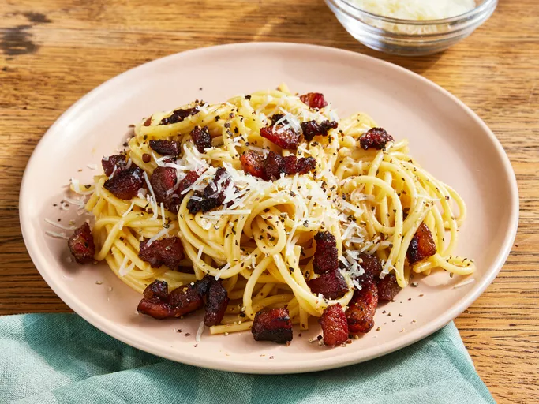

Home
Carbonara

An authentic Italian spaghetti carbonara uses eggs, hard cheese, cured pork, and black pepper—with no cream added.
Ingredients
- 200g dried spaghetti
- 100g – 150g guanciale or pancetta, diced
- 2 large eggs (plus 1–2 extra egg yolks for a richer sauce)
- 50g – 100g Pecorino Romano and/or Parmesan, finely grated
- Freshly ground black pepper and a pinch of salt
- Reserved pasta water (about ½ cup)
Instructions
- Boil the pasta: Bring a large pot of salted water to a boil. Add the spaghetti and cook until al dente. Before draining, scoop out about ½ cup of the starchy pasta water and set it aside.
- Crisp the pork: Place the diced guanciale or pancetta into a cold frying pan and set it over medium heat. Fry slowly until the fat renders out and the meat becomes golden and crisp. Remove the pan from the heat.
- Mix the cheese and eggs: In a medium bowl, whisk together the whole eggs, extra egg yolks, finely grated cheese, and a generous amount of cracked black pepper until smooth.
- Combine off the heat: Drain the spaghetti and add it directly into the pan with the warm pork fat (ensure the pan is removed from direct heat so the eggs do not scramble).
- Emulsify the sauce: Pour the egg-and-cheese mixture over the pasta, adding a splash of the reserved hot pasta water. Toss and stir vigorously until the cheese and starchy water melt together into a glossy, silky cream.
- 1. Serve: Plate immediately with extra grated cheese and black pepper on top.